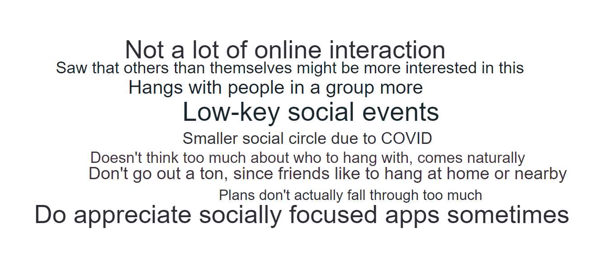
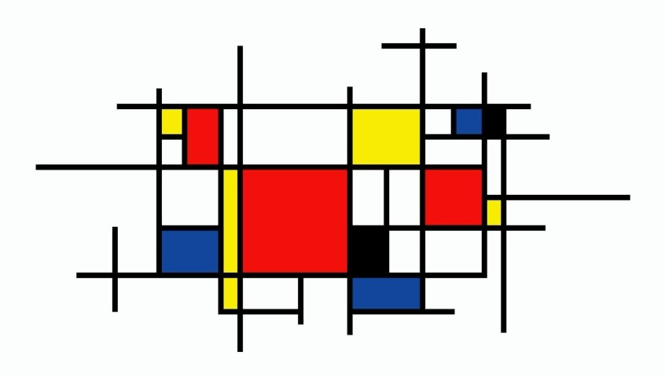
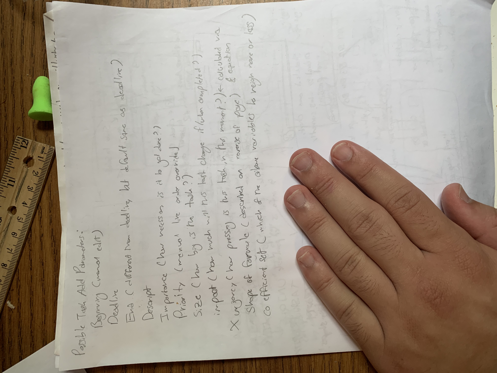
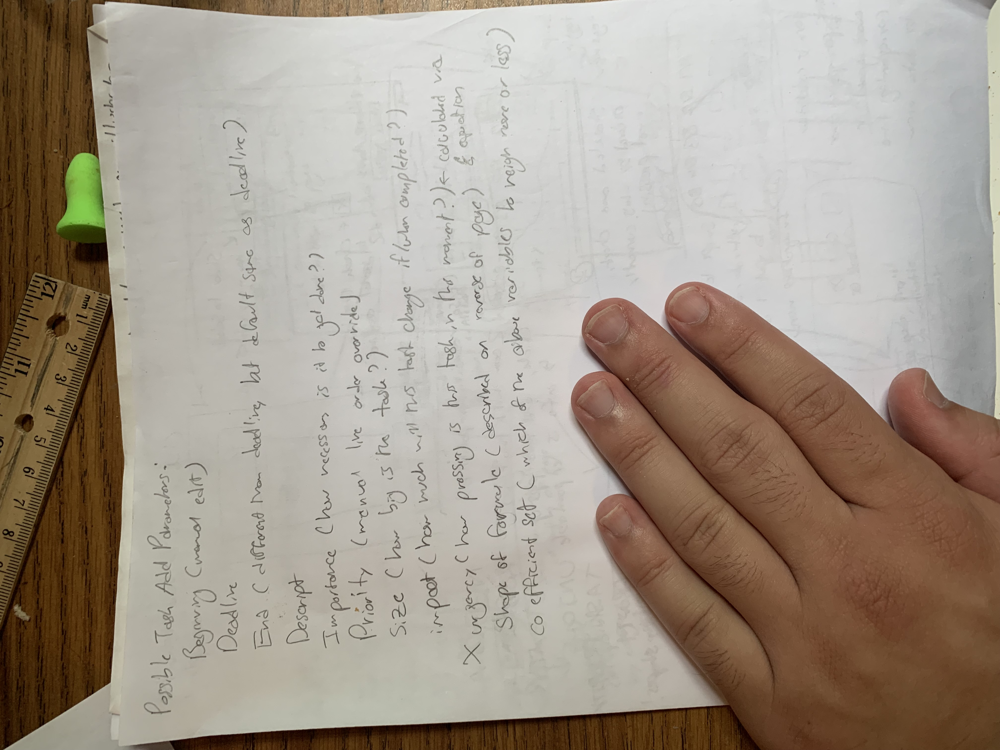
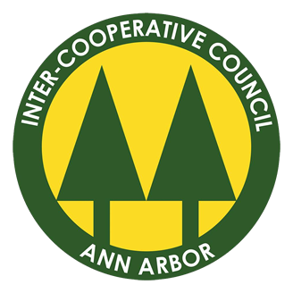
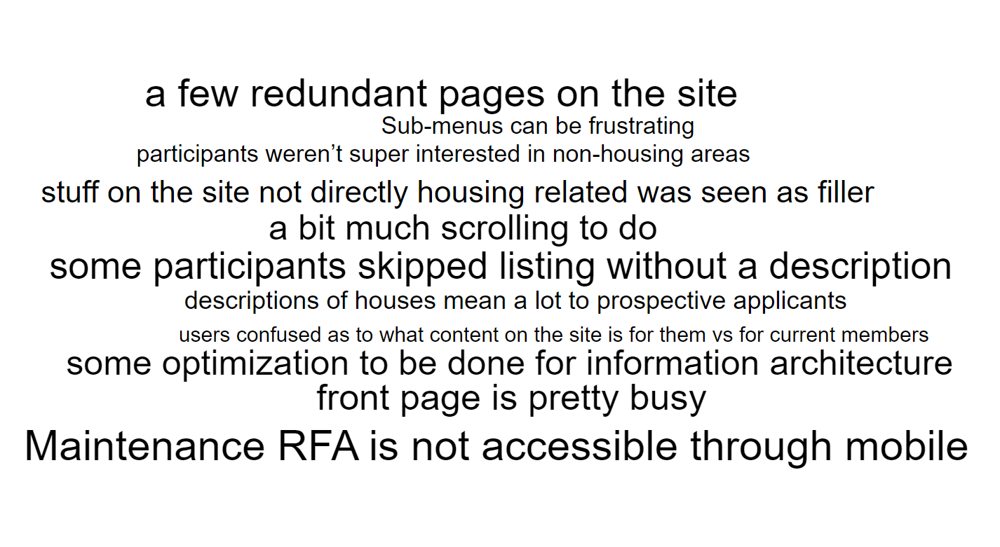
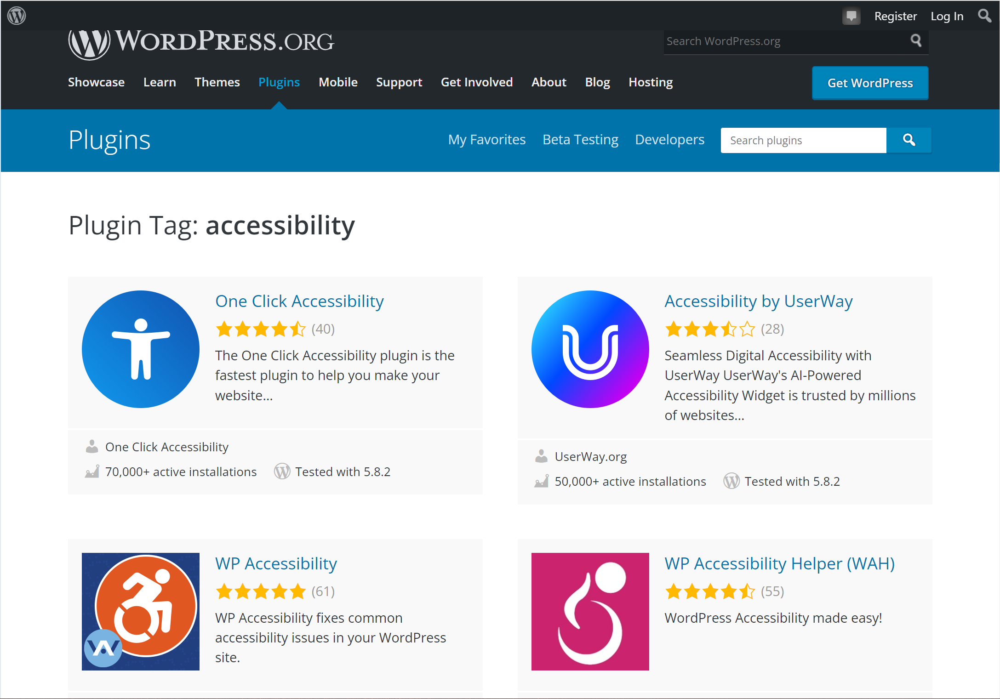
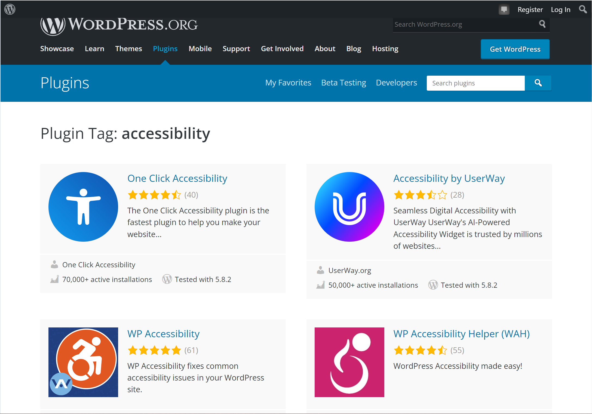
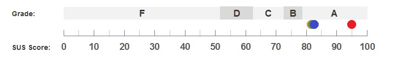

.svg)
Front Porch
Project Prompt:
Create an entire product design proposal within one semester, relating in some way to the theme of gratitude.
Context:
For this project, we went through the entire user research and design process, although, due to the class's schedule, our user research process was abbreviated and bare-bones. We spent a week or so brainstorming, conducted one set of user interviews and two sets of user testing (once with our paper prototype and once with our digital prototype), made a set of personas, a style/brand guide, and more. This has been the most comprehensive and significant user experience project I've undertaken to date..png)
We designed an app to solve the problem of virtual cross-generational communication. The communication styles and channels of family members from multiple generations differ greatly, which creates a barrier to thoughtful and genuine connections. Families need a meaningful method of showing gratitude and appreciation through a social platform that appeals to multiple generations. Front Porch is a group messaging application designed specifically for families, allowing them to connect with their loved ones no matter how far away with group chats designed for meaningful conversation, shared events to encourage connection offline, milestones to encourage celebration and appreciation for others, a shared media library so users can keep up with one another from a distance, and a notification system that keeps the conversation going.
Process:
For this project, we went through the entire user research and design process, although, due to the class's schedule, our user research process was abbreviated and bare-bones. We spent a week or so brainstorming, conducted one set of user interviews and two sets of user testing (once with our paper prototype and once with our digital prototype), made a set of personas, a style/brand guide, and more. This has been the most comprehensive and significant user experience project I've undertaken to date.In total, we made some personas, conducted interviews and analyzed the corresponding data, sketched out some use-case scenarios, made a brand/style/components guide, made a paper prototype, a digital wireframe, and then a functional digital prototype.
Deliverables:
To begin our design process, we did a little brainstorming and then some research via interviews: we knew gratitude can only be expressed through communication, and communication can only happen with connection, so we decided to provide the connection. The next big hurdle to supporting intergenerational gratitude and its necessary connections was getting users on both ends of that connection: making a platform amenable to both elderly and young people.
To help guide our new ideas, we made these three personas together as a team, broadly representing the young, middle-aged, and elderly user categories we would expect to work with. In making these, we strived to keep them both fun and informative, with attention to details particularly relevant for this unique project.

Then, we narrowed down our ideas, and made some sketches for how this app was going to work. We all made some scenario sketches, and began to outline a preliminary user flow, seen to the left on this whiteboard. Initially, we had planned for our app to be based primarily around photo sharing rather than text chat, so these drafts were a big departure from our original ideas!


We later touched up our original brainstorming from the whiteboarding stage into a proper user flow, adding in images of what those screens looked like in the end to help guide viewers like you!
With that, we moved onto making the paper prototype, and running some tests with our gracious participants. Around this point in time, we more deliberately moved away from our more vague ideas and solidied our plans of becoming a communication platform for families with a focus on sharing memories, experiences, and gratitude.
Both of our two rounds of testing with our paper and digital prototypes, thankfully, only ran into fairly minor, easily corrected issues, with many issues both times simply being due to the limitations of paper and Figma-based prototypes respectively. We took our feedback in stride to make a better product!

Above is our style guide, wireframe, and final functional prototype. I'm personally really happy with how this project and its deliverables turned out, and it really wouldn't have been possible without the hard work of everyone on that wonderful team, who taught me how wonderful this work can be when we all believe in it together.
Reflections:
This was the first large UX project I had undertaken working alongside a group. I really appreciated getting this experience as it reminded me that communication really comes before everything when working on a group project, especially in creating deliverables that are subjective, such as a product proposal. There was many a time when I felt confused about the direction we were going in, and thankfully mustered the courage many of these times to ask for clarification, only to discover by doing so that I wasn't the only confused one! As time went on, I did my best to encourage a culture in our group of asking for clarification in advance of confusion occuring, and I do believe we improved ourselves in that regard the longer we worked together. Even then, one of the issues I encountered most often was inconsistencies within our design due to lack of standardization: since all these actions are the same, what one animation should we use for all of them? How should our buttons look and feel, how many different variants should we have, and when/where/why should the different variants be used? In my future work, I hope to be even more precise in answering questions such as these, as I have now firsthand experienced the extra work and headache that comes later when those questions aren't properly answered.Hang5
Project Prompt:
Design a digital product with the goal of bringing people together socially in a vaccinated era..svg)
Context:
In a design competition team of myself and four other people, we were given a prompt of creating a product-solution that would bring people together socially in an increasingly post-pandemic world. We created this app over the course of five weeks as a team in a design competition. I was one of five team members and was the de facto Design Lead (I worked alongside three business majors and a computer science major!). We decided to name the app Hang5, as a play on "Hang Ten," since the app was made by the five of us and it was based aroung making "hanging out" easier.The competition had two main parts: design a digital product that addresses the competition prompt, and pitch it to a panel of judges with a fully fleshed out business plan. While I helped a bit with the business model side of things, I focused primarily on creating our functional prototype, and coordinated work from the other team members towards creating that (none of them had designed a digital product before!).
Process:
We created an app that both streamlines the process of deciding on/scheduling fun social activities with your friends and encourages trying out more adventurous social activities.Due to the very limited timeframe of the competition, we had to start bold by simply brainstorming product ideas, and then getting user interviews going to validate that idea (I mention this point as I know it is bad design practice, to design without proper context, but we had little choice, and did the best we could. Turns out we did pretty alright!). Brainstorming and user interviews (a non-mandatory step I encouraged our team to do) came along with personas and a user flow model, followed then by a full business plan and pitch deck, a wireframe, and a functional app prototype.
Deliverables:
Some people have a hard time maintaining consistent relationships with other people they care about and/or making new relationships with other interesting people. The pandemic only made this more of an issue, due to the logistic and social changes it brought (that are still very much present, even today). Our research showed us that this problem is still a problem for some people, just maybe not as many as we initially thought, which helped us decide to double-down on target demographics rather than going for a more generic approach.
Here are some of the key takeaways we made from our user interviews.
In our brief competitive analysis, we determined that our niche was unique enough that we could carve out a slice of it, especially if we partnered with local business and featured unique things-to-do opportunities for different areas. While apps like MeetUp fulfill similar find-something-to-do roles, we didn't find any product in our research that was particularly similar to our concept. We made a couple personas and corresponding journey maps as well, as part of the competition's requirements.
I've included the business model of our hypothetical enterprise to help grant a better understanding of what our app is, who we are, and what we're trying to do. Before this project, I hadn't ever seen one of these types of documents outside of my Information and Work class, but when my teammates finished it, it instantly caught my eye as being an amazing consolidation of all the key points on how our app, as both a piece of software and a product on the market, would interact with real people once released.
The personas we collectively made for this project helped us remember to keep all sorts of people in mind while designing this app, even while we more deliberately moved towards designing for young people later in our process (so as to focus in more precisely on a market).
While we didn't have time for external user testing, we did review the design internally with our team and worked to pair down the interactions to the minimum necessary to facilitate the product's design objectives. We cut out one or two entire views from the main app flow of finding an activity to do and didn't lose any major functionality in the process. We thankfully took enough care with our wireframing that we were able to move quickly on to a hi-fi prototype with minimal functional changes and mostly just the necessary aesthetic improvements.
Here's a couple high-level notes we took of our brainstorming process, the top one keeping track of the different app ideas we had come up with, and the bottom one being a rough outline (left to right) of our user flow, made once we had decided on a concept. We consulted with a mentor and competition judge from Amazon, who helped us decide to ultimately go with the "touching base with friends again" concept, which, over time, evolved into the platform that helps users to both find fun things to do while hanging out and streamline the process of actually getting to the hang that we submitted for our final deliverable (given that, relative to our other favorite of a platform that would have used crowdsourcing to help users find the best of a given food item, such as new york style pizza, in a given town). The user flow above is essentially the user flow of the final functional prototype, and it seems to have worked out pretty nicely!
We built our wireframe out based on the product requirements we identified from our interview data and internal brainstorming. We worked to keep the focus on more MVP-range features, as was requested by the competition judges. I had never worked before with a minimum viable product in mind as the deliverable, but this project (along with the Information and Work class I took) has definitely helped me better appreciate the value of producing minimum viable products, especially in the context of Agile development and other quick-moving workplace structures!
This is our final functional prototype that, together with our pitch deck and supplemental materials, won us an honorable mention!
Reflections:
I had never been the lead design person on a team before, not considering that this was a small team and that I was more thrust into being a design lead rather than being appointed one. I suddenly found myself in a place where we needed to not only sync ideas and trains of thought for design decisions but also help teach my team members how to help implement those design decisions in Figma. I did what I could given the resources I had, but I quickly found out that getting my teammates up to speed on Figma and general UX design principles in two weeks so that they could help make the functional prototype was not going to be possible. It became abundantly clear to me on this project how bad it was that all of us had been living in a vacuum in our own fields; on small teams like these, everyone needs to be able to interact, at least a little bit, with everyone else and their work.Pyet
Project Prompt:
Do whatever! (But, more precisely, make a product prototype!)Context:
Over the summer as a portfolio project, I decided to more significantly flesh out a task management app I had been dreaming of for some time, making a mobile interface for a back-end I have been writing in Python. In contrast to other task management apps, Pyet focuses on the ever-changing importance of your tasks in a given moment, alleviating the mental math of constantly re-evaluating the most important thing to be doing in any given moment. This solution also addresses a personal problem of mine: I become stressed when I see all the tasks on my to-do list, and I also become stressed trying to figure out which ones are most important at any given moment. I named the app Pyet after the visual artist Piet Mondrian as, while I initially was using bright primary colors for the tasks as a placeholder, it grew on me and I decided to both keep it and name the app accordingly.
A bit of artwork in Mondrian's style!
I outlined the prototype for Pyet on paper and tidied it up in Figma. I created this app over the course of about three weeks in the summer, as well as about three more weeks of working on the back-end of the app and designing how it would function during the holidays of December 2020 - January 2021. This project was entirely of my own creation. While I didn't do a formal competitive analysis for Pyet, I did poke around with some casual research to make sure I wasn't building something that already existed, and to make sure that there was no alternative that I would prefer over building my own app! The closest alternative I found was Todoist, from which I took a cues on how to input tasks (I love how flexible they make it for their users!) and, while Todoist and other apps have task prioritization systems, they often feel more like an afterthought (simply another 1-4 tag you can give a task, rather than something that dynamically and realistically reacts to several factors). While I let myself “treat myself” with this project, having myself be the user-in-mind, I do believe in and recognize that we, as designers, should always be focusing on the end user and their needs/wants rather than projecting our own, just wanted to make that clear!
For one of my classes this year, I actually made a short presentation about some of the strengths and shortcomings of Todoist, at least for my own needs. As I mention in the presentation, I love the incredible robustness in terms of features Todoist offers its users, without forcing them to use most of them. My concepts for Pyet draw directly from this, while also building on some of Todoist's shortcomings, with a streamlined task editing system and only one type of task group.
Process:
For Pyet, I chose not to conduct an entire cycle of user research and product design. This was partially because I had completed two almost entirely research-based projects prior to my work on Pyet, but also because it was a personal project, and I wanted to have some fun designing an app for myself primarily. I coded the back-end first as that was the skillset at the time. I did it a bit haphazardly, figuring out the logic of it as I went, but eventually ended up with something coherent: a system similar to a favorite app of mine, Todoist, where users can just input task-related info, and an algorithm will determine what type of data each piece of that input is, as well as what the actual data from each piece should be (I am well aware this isn’t best design practice, to do back-end work first, but I didn’t know at the time I was going to even continue work on this concept! I never thought I’d end up expanding a free-time project from six months prior into a whole entry in my portfolio!). From there, I built out the app's front-end as I went, and it was a fun ride!Deliverables:
During this project, I built out the back-end for the app, made a paper sketch of the interface, created a wireframe which was then polished into a prototype, and did testing with the back-end to make sure everything was functional. The main app view visualizes tasks as bands on a streamgraph-like visualization, being wider or narrower based on their importance at a given point in time. 

On the left are some early concept sketches for what the key interfaces of the app might look like. Eventually, I decided to keep things as focused as possible on the main streamgraph view for simplicity's sake, only deviating from that as necessary, such as to configure settings. On the right is some brainstorming for what kind of attributes users might be able to assign their tasks, either explicitly through a syntax such as Todoist's (where typing "p1" during task creation would assign the task a priority level of 1), or implicitly (i.e., the first unlabeled date typed in to a task's creation would be assumed to be for the task's deadline, unless a deadline had already been explicitly declared).
This final prototype includes most all of the views a user would find in Pyet. The top two rows demonstrate adding/viewing a task and editing a task respectively. The next rows, from the third down to the bottom, show the calendar overlay users can bring out to see their to-do's and their schedule simultaneously to see how they relate, how to only view tasks from a certain category, how to change how much different task attributes ultimately affect their ranking in the streamgraph, and how to create different growth patterns that can be applied to different tasks (for non-standard tasks that may become more or less important in unique ways).
Reflections:
This project was great for me to get a foothold in Figma, a platform I ended up using often throughout this past semester. I had dabbled in Figma, but never created a full prototype in it before. The prototype is not interactive/functional, which is one thing I hope to improve about it one day (maybe remaking it in Framer!). Making this prototype also helped me understand, especially while talking to my UX designer peers about it, that I don't need to necessarily flesh out the entire app in the prototype, that sometimes UX deliverables are asked to be more of an overview than a complete app.Inter-Cooperative Council at the University of Michigan (ICC)
Project Prompt:
Create a small body of UX research on an organization of our choice; Generally improving the UX of the icc.coop website. Context:
This project, I completed as part of both my classwork (for SI 422: UX Research Methods) and a non-paid position (ICC Member Assistant) I was working in at the time. SI 422 assigned me with the first prompt, of creating a small body of research (as a project to, in a more hands-on way, learn about UX Research). With my goals at my position with the ICC being a bit more free-form at the time, I decided to fulfill two needs at once by using the ICC website as my project focus.The ICC is a student cooperative housing organization based out of Ann Arbor, MI, and can trace back its roots as part of the student community there to 1932. The ICC has a mission of being an inclusive and affordable living option for Ann Arbor students and citizens, an especially poignant mission in this time of rapidly increasing economic inequality and student debts. The ICC's website features nearly an incredible wealth of information to users, on nearly every relevant subject imaginable for members, staff, non-members and more.
Process:
As part of this body of research, I conducted an anonymous user test of the ICC website through usertesting.com, as well as a series of interviews with test participants in the site's target student demographic and a survey of current ICC members to gain an understanding of how the site was working for both prospective and current members, as it is designed to meet the informational needs of both.Due in part to the wacky interactions between the class and my ICC work, I ended up doing the interviews first, followed by the anonymous user testing and then the survey. It was super fun to use the user testing software and see the perspectives people had from a few different continents on both the website's design and the idea of cooperative living.
Deliverables:
This project was a little bit less self-directed than my other projects so far, and as such I had my work cut out for me. In addition to the research, however, I did have a little time to make a quick wireframe based on the findings from my research, and also the opportunity to present my final presentation to the ICC's Director of Communications, all of which definitely made the experience worth it. I'm definitely looking to be primarily a UX designer moreso than a researcher, but doing research-based projects like this one and my work for MSGC not only allowed me to refine my skills in research and learn from the mistakes I made, but also solidified my belief that research is the most important part of the design process.
My user interviews showed a few different key findings, with some of the main ones included above.

Aggregated data from the survey of current ICC members that I ran. Noticing that the ICC website, as it stands, is designed to meet the needs of both current and prospective members, I issued a survey of current members to understand more about how they interact with both the website and the ICC as a whole.
After going through the data from the interviews, testing, and surveys, it became clear to me that users visit this site for one primary reason: to acquire or reacquire housing. In order to facilitate that goal, I knew the website would have to be streamlined, with the action of obtaining housing clearly highlighted as the main action of the site. The current website has a navbar at the top with several main options; on the mainpage, I forewent this to have only a few large key buttons in the bottom-middle of the page, so that the user can "catch a vibe" of the organization from a nice splash image on the main page but also get right down to business. Based on user feedback that the system of acquiring housing throug the site has often felt unintuitive and roundabout, I revised that flow to have a much clearer directionality, and the ability for users to skip the sections to learn about ICC housing if they're simply here to reapply. The current sections for maintenance and other information on the site are sprawling; in this revision, I've fit them under their own neat roofs, clearly separate from and secondary to the housing acquisition flow.
This is the final presentation I delivered to the ICC, containing summaries of all the research I did over the course of the semester, digested into a more readable format from the raw data.
While I haven't finished this wireframe yet, I intend to come back to it one day, maybe next summer, molding it into a site even more reflective of the beautiful people's project that is the ICC (and even better serving the people whose project it is!).
Reflections:
This project was particularly interesting as I was balancing both my class requirements and the needs of the ICC in my work. Thankfully, they didn't prove to be too much in conflict, but, in retrospect, I'm glad to have gained experience in working with two sets of requirements from two different "supervisors." It was also wonderful to work for an organization I care a lot about, an organization that I know is doing good work that benefits regular people; this work definitely helped to shape my desire to work somewhere in the future I feel similarly about, somewhere I know is creating a positive difference in the world for humanity.Michigan Space Grant Consortium (MSGC)
Project Prompt:
Re-evaluate the MSGC website to improve the general user experience and bring it into compliance with WCAG 2.0 AA accessibility guidelines.Context:
The Michigan Space Grant Consortium is in charge of disbursing grants for space-related research and activities to students, academics, researchers and more in the state of Michigan. These grants sponsor anything from sending important experiments into space, to creating technologies on Earth that will improve future space exploration ventures, and even public advocacy for space exploration and research. Through my research, I learned that their website is the place where government agencies dispersing funds, individuals and organizations looking to acquire those funds, and interested private contractors intersect.Process:
As my process for this project, I used a few different methods: a full heuristic evaluation of the site, interviews, surveys, and an affinity wall, which I compiled into the final deliverable for this internship, my final report. While I went into this project expecting to help execute a full re-design of this organization's website, I quickly remembered after sinking my teeth into this project that design is all about what people need you to make, not what you want to make. What I did know is that I had to get to learning much more about web accessibility if I was going to help bring this website up to modern accessibility standards, so that learning was among the first things I did to get ideas about the changes I could make. 

Wordpress plugins galore, oh my!
Deliverables:
After speaking with my supervisor and understanding the boundaries of this project, I worked to find a solution to their web accessibility issues within the WordPress platform they were using. I recommended a series of plug-ins that collectively reached most of the WCAG 2.0 AA standards, and most of the remaining requirements we were able to reach through subtle changes to the site's design, such as underlining key links.The heuristic evaluation of the site was one of the first exercises I chose to do after helping to improve web accessibility, so I could get ideas for how to improve the website and get a better understanding of the current state of affairs. This also helped me generate better questions for the interviews I would later facilitate.
The heuristic evaluation is long and hard to screenshot, but feel free to check it out from page 3 onwards of the report! This is the report that was the final deliverable of this internship, so it also includes information on the other research and work that I did with MSGC if you're interested in learning about that.
Then came the interviews and surveys. Here are some of the opinions I got from interview participants, aggregated in the form of an affinity wall. The main takeaways from these activities was that interviewees generally appreciated the site's look and feel, but, while they also recognized there really wasn't anywhere else to go to get the things they needed from this site and this organization, they still needed more information in key areas of the site.

Survey responses for site usability: all four responses within the A grade range!
Reflections:
Working with people who were all in some way involved with academia and/or an educator themselves was interesting, and an experience I had never had before in a UX context! Everyone I spoke with was both very kind but also keen on helping to improve things so that this organization that they had all either benefited from or worked with could be its best self. They were very much an audience who was well aware of the value of UX work and how its positive impacts can be particuarly effective in helping even more people interact with this organization.I was brought on as an intern with the MSGC team with these two goals in mind, of improving the site's web accessibility and also its general usability/user experience. While it was excellent for me to have an internship experience so focused on making things accessible (constantly reminding me just like my excellent web dev professor that accessibility is a goal that must always be front of mind during the creation process), I don't think I got to do everything I wanted to during this UX adventure, I was glad for the research experience it gave me, as research, done right, is the most important component of design.